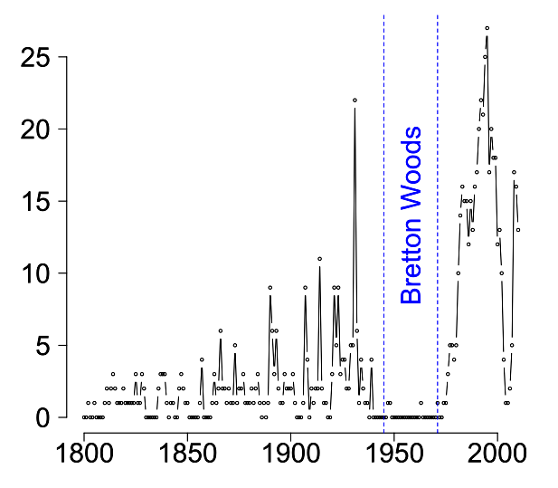
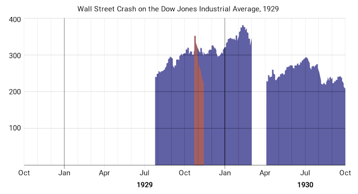
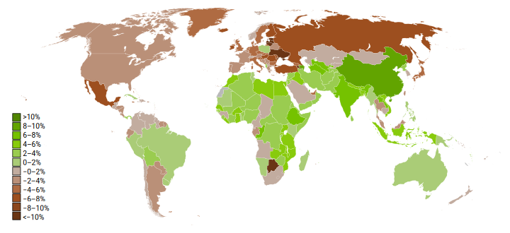
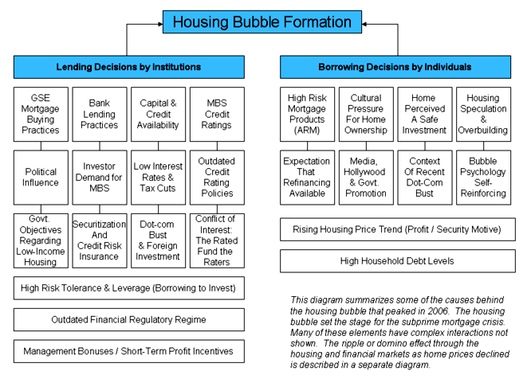
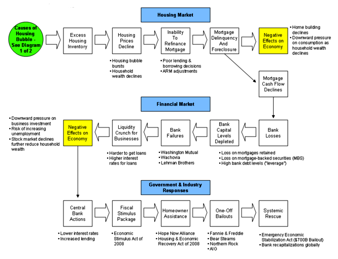
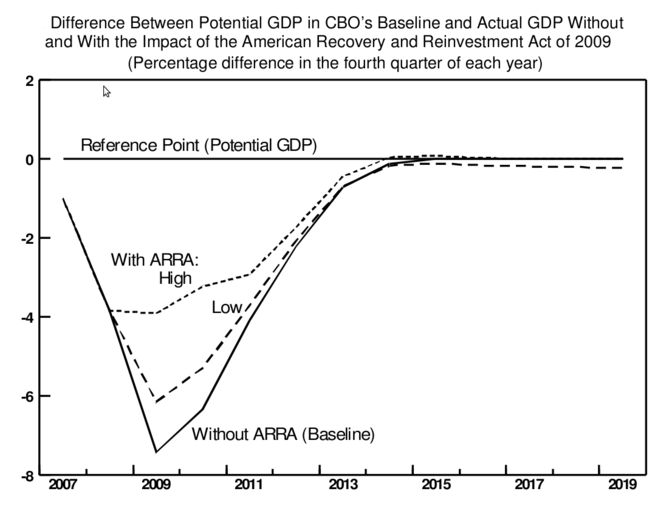
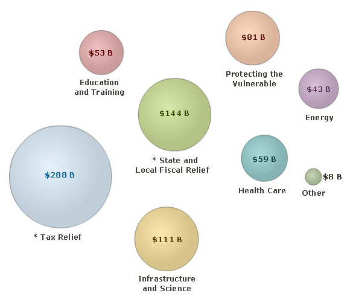
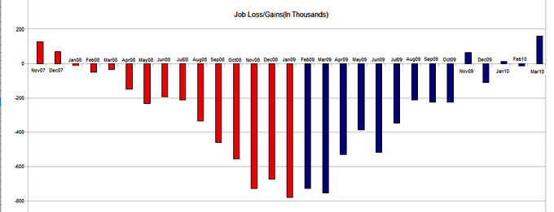
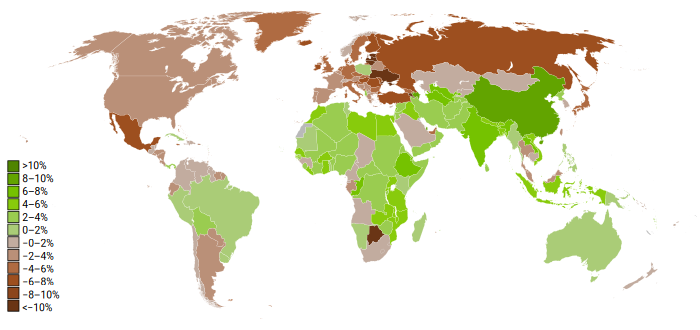
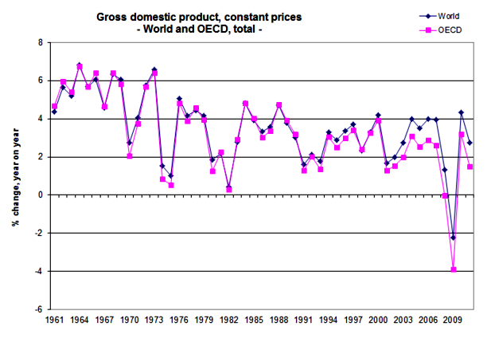

Banking crises can be caused by inadequate governmental oversight, bank runs, positive feedback loops in the market and contagion.
Describe some common causes of a banking crisis, Explain a bank run
In light of recent market and banking failures, the economic analysis of banking crises both historically and presently is a constant source of interest and speculation. Banking crises are when there are widespread bank runs: an abnormal number depositors try to withdraw their deposits because they don't trust that the bank will have the deposits for withdrawal in the future.
Banking crises are not a new economic phenomenon, and similarly are not the only source of financial crises. Over the course of the past two centuries there have been a surprisingly large number of financial crises, as demonstrated in the attached figure . In understanding banking crises over time, it is useful to identify the causes in context with historic examples of banking collapses.
This chart is an interesting take on the relatively consistent frequency in which financial crises occur across the globe. It is interesting to note both the efficacy of Bretton Woods alongside the increasing risk of financial collapse in modern times.
Banks can fail for several different reasons:
The Great Depression highlights how bank runs caused a banking crisis, which ultimately became a global economic crisis.The Great Depression in 1929 resulted from a variety of complex inputs, but the turning point came in the form of a mass stock market crash (Black Tuesday) and subsequent bank runs. As fear began to grip consumers across the United States, people became protective of their assets (including their cash). This caused a large number of people to the banks to withdraw, which in turn motivated others to go to the banks and get their capital out also. Since banks lend out some of their deposits, they did not have enough cash on hand to meet the immediate withdrawal requests (they became illiquid) and therefore went bankrupt. Within a few weeks this resulted in a systemic banking crisis (see ).
As the market falls, investors create a positive feedback loop and self-fulfilling prophecy due to a lack of confidence that drives it down even further.
Banking crises have a range of short-term and long-term repercussions, domestically and globally, that reduce economic output and growth.
Explain consequences of banking crises on the broader economy
Banking crises have a dramatic negative effect on the overall economy, often resulting in an eventual financial and economic crisis in a given economic system. Banking crises have a range of short-term and long-term repercussions, domestically and globally, that underline the severe repercussions of irresponsible banking practices, poor governmental regulation, and bank runs. The most useful way to frame the consequences of bank crises is by observing the critical role banks play in economic growth, primarily through investment and lending.
Within a given system, banking failures create a range of negative repercussions from an economic perspective. Banks coordinate and economy's savings and investment: the act of pooling money to capture higher returns for everyone while simultaneously funding business dependent upon leveraging debt and equity. With this in mind, a banking crises can have a variety of averse individual and economic consequences within the system.
First and foremost, investment suffers. When banks lack liquidity to invest, businesses that depend upon loans struggle to raise the capital required to execute upon their operations. When these businesses cannot produce the capital required to operate optimally, sales decline and prices rise. The overall economic performance of any debt-dependent industries becomes less dependable, driving down consumer and investor confidence while reduce overall economic output. Banks also perform more poorly, due to the fact that they have less capital to invest and returns to acquire.
This drives down the overall economic system, both in the short term and the long term, as companies struggle to succeed. The fall in liquidity and investment drives up unemployment, drives down governmental tax revenues and reduces investor and consumer confidence (damaging equity markets, which in turn limits businesses access to capital). There is a distinctive cyclical nature to these adverse effects, as each are interconnected in a way that creates a domino effect across the domestic economic system.
While these domestic consequences are expected and, in many ways, intuitive, the global dependency upon foreign trade in modern markets has exacerbated these effects. Imports and exports play an increasingly large role in the health of most developed economies, and as a result the relative well-being of trade partners plays an increasingly critical role in the success of domestic economies.
A good example of this is to look at the way in which the U.S. (and to some extent, European) banking disasters in 2008 and 2009 led to a complete global financial meltdown, destroying economies not involved in the irresponsible investing practices executed by banks in these specific regions. identifies the critical importance of economic well-being in trading partners, as the U.S. banking and financial crises spread rapidly (within the course of just one year) across a substantial portion of the globe (though there are certainly other factors that contributed to the financial crisis and its consequences). The domestic reduction of capital for businesses, income for consumers and tax revenue for governments ultimately results in a reduction of trade and economic activity for other economies.
This figure shows the growth in GDP for world economies in 2009. The slow and negative growth demonstrates all of the economic losses that resulted in part from the U.S. financial crisis, highlighting the dependency of global economies.
Banks, consumers, and the government all contributed to improper borrowing and lending, which in turn created a downward spiraling economy.
Summarize the causes that led to the 2007 banking crisis
The recent financial crisis, commonly referred to as the sub-prime mortgage crisis of 2007-2008, was borne of the failure of a series of derivative-based consolidation of mortgage-backed securities that encapsulated extremely high risk loans to homeowners into a falsely 'safe' investment. To simplify this, banks pushed mortgages on prospective home owners who could not afford to repay them. Then they combined and packaged varying mortgage-backed securities based off of these loans and sold them as highly dependable and safe investments, either through a lack of due diligence (negligence) or lack of ethical consideration. This created an economic meltdown, starting with the United States, that spread across the global markets.
The inherent complexity of the causes and dramatic repercussions (most of which are still ongoing) require a great deal of context. It is a fiercely debated and widely discussed issue in the field of economics (and in mainstream media), providing a real-life case study for many of the critical concepts of economic theory.
The inputs to the 2007-2008 economic collapse, briefly touched upon above, are complex and still evolving. That being said, there are a few key talking points from an economic perspective that should be discussed. A useful perspective to take is the various stakeholders and their contributions :
This graph outlines two of the three parties in the collapse (excludes government), as the banks and the buyers both took on ridiculous amounts of risk.
Combining these factors, the problem largely revolved around irresponsible lending and borrowing which was then turned into derivatives that were labeled safe despite their massive risks. This resulted in an economic realization of loans that could not be repaid, which spread through the banking system and turned into large scale obligations that could not be met.
What happened next is well captured in the . In short, the banks eventually failed due to their investments. In order to prevent the entire financial system from collapsing, some of the banks (and other financial institutions) were bailed out.
This chart embodies critical checkpoints in the economic decline reactions to poor mortgage management by the banks. Understanding the implications of each point on this diagram will greatly enhance the larger understanding of the short term effects of this economic collapse.
Of course the negative effects did not stop there. The U.S. stock market lost confidence in financial institutions and some of the companies connected to them and subsequently crashed. The NYSE fell by half, drastically reducing the value of the U.S. economy. This was then telegraphed into a loss of consumer confidence and business access to investment. Within a few months, there were job cuts, bankruptcies, and reduced spending, as the crisis spread throughout the economy (both domestically and globally).
The objective of economic recovery when in crisis is to stabilize the economy and recapture the value lost using economic stimulus strategies.
Discuss the characteristics of the recovery from the 2007 crisis
The 2007-2009 economic crisis has had far-reaching and profound effects on both the domestic and global markets, primarily as a result of the sub-prime mortgage disaster originating in the United States. Addressing these economic ramifications to induce recovery has been the focal point of global governments and global agencies such as the International Monetary Fund (IMF). The objective of economic recovery when in crisis is to stabilize the economy, and from there recapture the value lost through economic stimulus strategies while addressing the factors which contributed to the collapse in the first place.
One of the key components to the crisis recover in the United States is an act called the American Recovery and Reinvestment Act of 2009 (ARRA), put into place by the Obama administration just as the first days of his term were beginning. This act has seen substantial debate, both positively and negatively, as to the efficacy and overall implementation of the program. Understanding the inputs, and expected outcomes, is critical to understanding the economics behind reacting to economic crises (particularly from a Keynesian perspective).
The stimulus package can be broken down via the attached figure in regards to monetary investment in specific places , totaling \$831 billion (USD) between 2009 and 2019. The goal of investing or providing tax relief and subsidies for individuals and companies is to drive up purchasing behavior and offset the positive feedback loop attributed to economic crises. This is largely based on the Keynesian concept of driving spending through enabling spending, in turn driving up demand, creating jobs, and driving spending up further. President Obama's administration was criticized by classical economists for employing this as well as Keynesian economists (such as Paul Krugman) for not employing it enough. That being said, the efficacy in the attached figure demonstrates that it was likely a strategic reaction to the economic crisis .
This graph points out the economic opportunity cost of not utilizing the ARRA, which would likely have left the U.S. (and subsequently, the global) economy in significantly worse shape than it is now.
This graphic demonstrates the different silos receiving government aid within the domestic economy, as a direct result of the American Recover and Reinvestment Act (ARRA).
Perhaps more debatable still, is the reaction to the inevitable and deserved bankruptcy of the banks and insurers involved in the toxic mortgage-backed securities (i.e. CDO's) that drove the economy into disaster were bailed out by the government. These companies, such as AIG, Bank of America, Citigroup, and other distributors of toxic investments were handed the required capital by the government to offset their massive losses due to undue risk and poor leveraging. This was in the form of the government utilizing tax money to purchase these securities, removing the toxic assets from the books of the companies involved (who were deemed 'too big to fail'). This move saved the economic decline and restored consumer confidence through direct government intervention.
TARP was also largely criticized, with a high number of seemingly reasonable objections. The first, and most intuitive, is that these businesses deserved to go under. Bad business practice, poor investment, and grossly unethical behavior deserves bankruptcy. Instead, the government demonstrated that, as long as certain fiscal influence is achieved, these competitive rules are negligible. Secondly, and slightly more complex, is the implementation of the TARP act (which necessitated SIG-TARP, an oversight group ensuring that TARP money went out to those who it was intended for). It was noted on many occasions that TARP money was ill-used.
While the long-term outcomes of these practices cannot yet be predicted, the progress made so far is worth analyzing economically. First and foremost, job numbers have improved, although not as much as had been hoped or expected (see ). While this is positive, it does not capture the large number of people who are underemployed or the individuals who have abandoned the search for employment. GDP growth has inched along to positive numbers, as has the profitability of many businesses and industries. Interestingly enough, as of the end of 2013, the stock market has not only recovered but expanded beyond 2007 levels.
This graph demonstrates the negative affect that the collapse had on jobs as well as the pacing of economic recovery in the short-term.
The 2007-2009 economic collapse was damaging not only to the U.S. but also global markets, driving the global economy into recession.
Analyze the extent to which the 2007 crisis was global
Modern markets are dependent upon one another across national borders, where global trends in economic growth and well-being will have a dramatic impact on national economic well-being and vice versa. As a result, the 2007-2009 economic collapse had large effects not only at the origin (in the United States), but also on a global scale. The speed in which the market decline spread across the globe underlines just how far globalization and international interdependence has come, with GDP growth numbers in 2009 already demonstrating substantial losses across the map (see ).
As this map illustrates, many international markets fell rapidly into decline as a direct result of the U.S. sub-prime mortgage disaster.
In December 2007, the U.S. officially fell into an 18-month long recessionary period of negative GDP growth (over two consecutive quarters). This recessionary period spread rapidly around the map, creating a global recession in Q3 and Q4 in 2008 and Q1 of 2009 (defined as a contraction in global GDP growth during that time) as is represented in this figure . To provide additional context to the global adverse effects of the sub-prime mortgage crisis, of 65 countries that record and report GDP only 11 escaped a recessionary period between 2006 and today.
It is quite clear in this graphic, the global GDP growth dropped dramatically following the U.S. crisis, pitching the entire global economy into a recession.
Even countries where double-digit economic growth had been a consistent trend going into 2008, such as China, began to experience growth reductions due to reduced consumer purchasing power on a global scale. China has seen reductions towards the 7%-8% economic GDP growth (year on year), from clear double-digits in previous years.
Another indirect global impact that occurred as a result of the economic collapse is political instability, primarily due to the inability of developed nations to pursue social welfare investments and global poverty reduction processes during recessionary times. Indeed, these instabilities are not only isolated to developing nations. Countries in the EU, such as Greece, Spain and Italy, have seen dramatic GDP decreases and unemployment numbers reaching or exceeding 20% in some cases. This instability has placed a great deal of pressure on government officials to solve these huge economic problems in the short-term. The United States has also seen an incredible reduction in governmental efficacy with the least effective house of representatives for nearly a century alongside dramatic polarization of public opinion towards left-wing and right-wing ideas.
Positively, many global organizations and countries are actively employing policies to minimize the likelihood of a re-occurrence in the future. Reducing interest rates to drive up borrowing and investment, providing tax benefits to the unemployed and underemployed, and subsidizing new business have created positive steps towards meaningful recovery globally.
There have also been a series of banking and financial regulatory changes across the world.These global safety nets and prevention policies are setting the tone for future strategies to avoid economic crises and minimize the prospective damage that occurs as a result of these unethical practices.
{kind=link}
{kind=link}
{kind=link}
{kind=link}
{kind=link}
{kind=link}
{kind=link}
{kind=link}
{kind=link}
{kind=link}